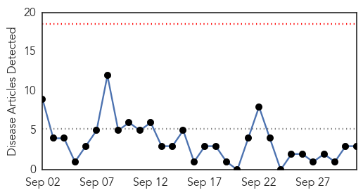
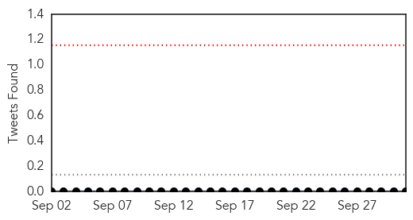

Ebola
30-Day Web Trend
0 alerts, 0 warnings

30-Day Twitter Trend
0 alerts, 0 warnings

Article Locations

Article Confidences

Top Articles:
- 1.000
- UH researcher’s book addresses, analyzes Ebola epidemic
- 0.999
- Mānoa: UH researcher's book addresses, analyzes Ebola epidemic
- 0.999
- International Cooperation the Key to Stopping Ebola
- 0.999
- World Health Organization Declares Liberia Ebola-Free Once Again After The Outbreak’s Re-emergence In June : World : koreaportal
- 0.993
- Speaker sheds light on Ebola outbreak – Vidette Online
- 0.991
- Is SA ready for a return of Ebola?
- 0.985
- Surviving Ebola Is Just the First Step
- 0.984
- The cost-effective way to protect against future Ebola outbreaks
- 0.983
- Ebola outbreak could have been mitigated, responder says
- 0.978
- First suspected Ebola case in Myanmar
- 0.951
- Kids With Ebola, Bird Flu Or TB? Texas Children's Hospital Will Be Ready
- 0.951
- Kids With Ebola, Bird Flu Or TB? Texas Children's Hospital Will Be Ready
- 0.938
- "It could have been prevented": Ebola Warrior speaks in the Twin Cities
- 0.938
- Nigerian carrier Arik to resume flights to Liberia next week
- 0.936
- Public advised against complacency on Ebola
- 0.917
- Chip-based technology enables reliable direct detection of Ebola virus
- 0.872
- Mobile Radio Skits Raise Ebola Awareness in Sierra Leone - Sierra Leone
- 0.849
- Cuba Headlines – Cuba News, Breaking News, Articles and Daily Information
- 0.739
- Sierra Leone: Sierra Leone Remote Monitoring Update September 2015
- 0.727
- OSF St. Joseph Medical Center Prepping for Pandemic
- 0.623
- Africa Information
- 0.593
- ‘Nigeria can soar higher health wise’
- 0.542
- UN, Gates Foundation Collaborate on Primary Health Care, Malaria
Top Tweets:
- 0.973
- Ebola outbreak could have been mitigated, responder says - Bloomington Pantagraph http://t.co/Qv4UMjrxGZ ebola EVD
- 0.950
- Speaker sheds light on Ebola outbreak - Vidette Online http://t.co/MqKbRFl3a0 ebola EVD
- 0.934
- Kids With Ebola, Bird Flu Or TB? Texas Children's Hospital Will Be Ready - Capital Public Radio News http://t.co/8D8QQEG0C3 ebola EVD
- 0.932
- NewLink wins $8.1M from DOD to advance Ebola vaccine - FierceVaccines http://t.co/i7lOvRHtir ebola EVD
- 0.925
- Outbreak tails can be looooooong: West African Ebola outbreak drags on, with 4 new cases in Guinea. http://t.co/jvvmaRQnbc
- 0.861
- The Body Collectors of the Ebola Epidemic https://t.co/R8RSLX3MHQ
- 0.786
- A year later, fiancée of Ebola victim picking up pieces - WFAA http://t.co/JtrXj0HszQ ebola EVD
- 0.740
- Surviving Ebola is just the first step - Al Jazeera America http://t.co/kwMnBN3c44 ebola EVD
- 0.725
- At a glance: Sierra Leone - UNICEF (press release) http://t.co/8PUmLOF2jn ebola EVD
- 0.706
- Ebola outbreak could have been mitigated, responder says - Bloomington Pantagraph http://t.co/iXpuHtDj49
- 0.667
- NewLink Ebola vaccine research awarded $18 million - http://t.co/BFV5zeTqN4 http://t.co/pO2Y1lQhN4 ebola EVD
- 0.619
- Kids With Ebola, Bird Flu Or TB? Texas Children's Hospital Will Be Ready - Capital Public Radio News http://t.co/j6M6xQFIgi
- 0.611
- The cost-effective way to protect against future Ebola outbreaks - The Hill (blog) http://t.co/eUO7kUNuCl ebola EVD
- 0.593
- .@WHO Ebola Emergency Committee meets today for 7th time. Not expecting they will say Ebola is no longer an emergency. Not till it's done.
- 0.592
- West Africa's Ebola outbreak is down to a trickle but work to develop vaccines continues - with US government $$. http://t.co/99ZNUgo0tu
- 0.565
- RT: SHOWCASE: @EbolaAlert contributed 1.8M of 2M impressions for SABAagm2015 science ebola media @PublicMediaPMA http://…
- 0.509
- Want to Fight Ebola? Help Liberia Invest in Toilets. https://t.co/gwqR2WXtDY
MERS
30-Day Web Trend
0 alerts, 0 warnings

30-Day Twitter Trend
0 alerts, 0 warnings

Article Locations

Article Confidences

Top Articles:
Top Tweets:
- 0.586
- AFD blog `Saudi MOH Reports 1 MERS Case' MERS-CoV http://t.co/7LX8LTOzLX
- 0.512
- AFD Blog `WHO MERS Update – Jordan, October 1st' MERS-CoV http://t.co/4EnJ6Husqw